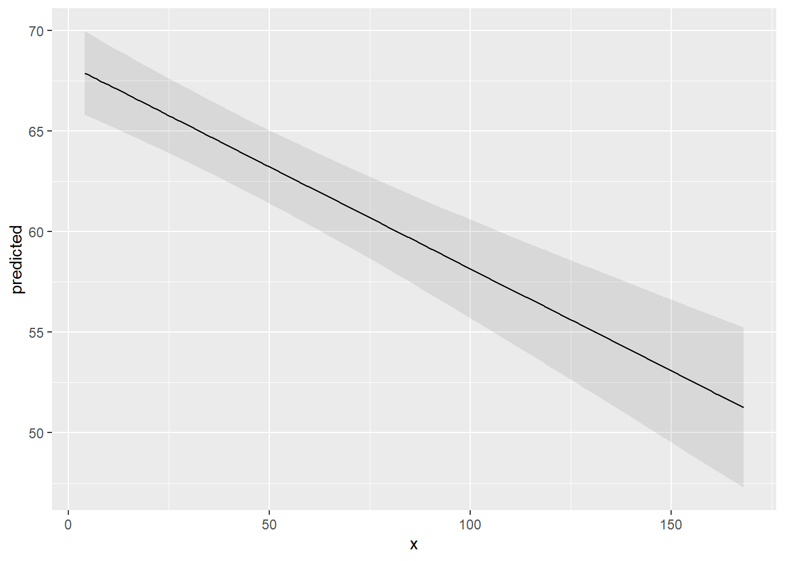
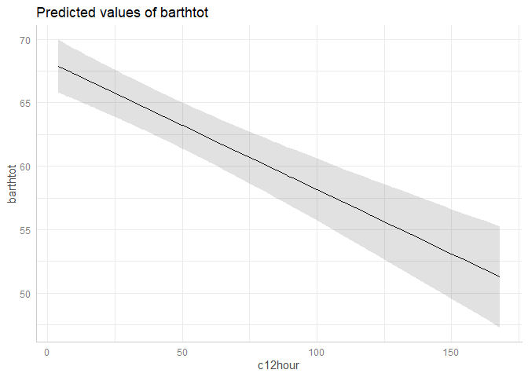
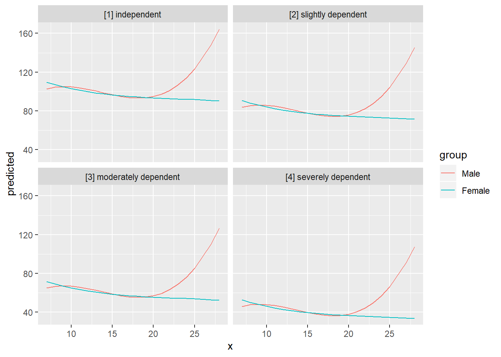
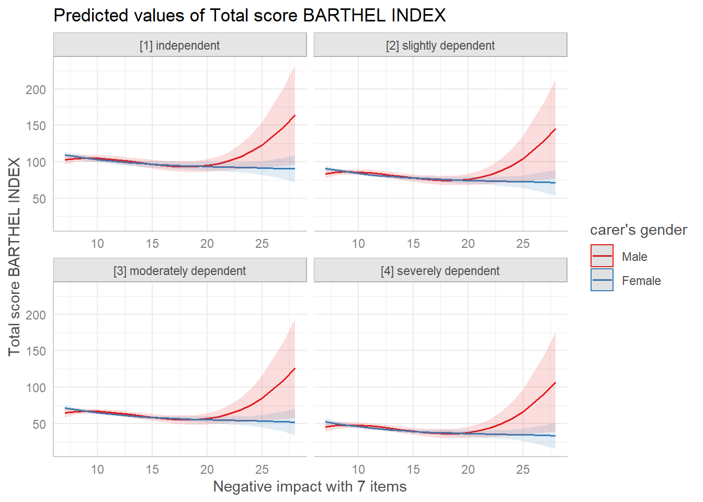

Lüdecke D (2018). ggeffects: Tidy Data Frames of Marginal Effects from Regression Models. Journal of Open Source Software, 3(26), 772. doi: 10.21105/joss.00772
Why marginal effects?
Results of regression models are typically presented as tables that are easy to understand. For more complex models that include interaction or quadratic / spline terms, tables with numbers are less helpful and difficult to interpret. In such cases, marginal effects are far easier to understand. In particular, the visualization of marginal effects allows to intuitively get the idea of how predictors and outcome are associated, even for complex models.
Aim of this package
ggeffects computes marginal effects (or: estimated marginal means) at the mean or at representative values (see definitions here) from statistical models and returns the result as tidy data frames. These data frames are ready to use with the ggplot2-package.
Documentation and Support
Please visit https://strengejacke.github.io/ggeffects/ for documentation and vignettes. In case you want to file an issue or contribute in another way to the package, please follow this guide. For questions about the functionality, you may either contact me via email or also file an issue.
ggeffects supports many different models and is easy to use
Marginal effects can be calculated for many different models. Currently supported model-objects are: bamlss, bayesx, betabin, betareg, bglmer, blmer, bracl, brglm, brmsfit, brmultinom, clm, clm2, clmm, coxph, fixest, gam (package mgcv), Gam (package gam), gamlss, gamm, gamm4, gee, geeglm, glm, glm.nb, glmer, glmer.nb, glmmTMB, glmmPQL, glmrob, glmRob, glmx, gls, hurdle, ivreg, lm, lm_robust, lme, lmer, lmrob, lmRob, logistf, lrm, MixMod, MCMCglmm, multinom, negbin, nlmer, ols, plm, polr, rlm, rlmer, rq, rqss, stanreg, survreg, svyglm, svyglm.nb, tobit, truncreg, vgam, wbm, zeroinfl and zerotrunc.
Support for models varies by function, i.e. although ggpredict(), ggemmeans() and ggeffect() support most models, some models are only supported exclusively by one of the three functions. Other models not listed here might work as well, but are currently not testet.
Interaction terms, splines and polynomial terms are also supported. The main functions are ggpredict(), ggemmeans() and ggeffect(). There is a generic plot()-method to plot the results using ggplot2.
Examples
The returned data frames always have the same, consistent structure and column names, so it’s easy to create ggplot-plots without the need to re-write the function call. x and predicted are the values for the x- and y-axis. conf.low and conf.high could be used as ymin and ymax aesthetics for ribbons to add confidence bands to the plot. group can be used as grouping-aesthetics, or for faceting.
ggpredict() requires at least one, but not more than four terms specified in the terms-argument. Predicted values of the response, along the values of the first term are calculated, optionally grouped by the other terms specified in terms.
library(ggeffects)
library(splines)
data(efc)
fit <- lm(barthtot ~ c12hour + bs(neg_c_7) * c161sex + e42dep, data = efc)
ggpredict(fit, terms = "c12hour")
#>
#> # Predicted values of Total score BARTHEL INDEX
#> # x = average number of hours of care per week
#>
#> x Predicted SE 95% CI
#> 4 68 1.06 [65.81, 69.96]
#> 12 67 1.01 [65.10, 69.05]
#> 22 66 0.96 [64.19, 67.94]
#> 36 65 0.92 [62.84, 66.45]
#> 49 63 0.93 [61.51, 65.14]
#> 70 61 1.01 [59.22, 63.17]
#> 100 58 1.25 [55.71, 60.60]
#> 168 51 2.04 [47.27, 55.25]
#>
#> Adjusted for:
#> * neg_c_7 = 11.83
#> * c161sex = 1.76
#> * e42dep = 2.93A possible call to ggplot could look like this:
library(ggplot2)
mydf <- ggpredict(fit, terms = "c12hour")
ggplot(mydf, aes(x, predicted)) +
geom_line() +
geom_ribbon(aes(ymin = conf.low, ymax = conf.high), alpha = .1)
However, there is also a plot()-method. This method uses convenient defaults, to easily create the most suitable plot for the marginal effects.

With three variables, predictions can be grouped and faceted.
ggpredict(fit, terms = c("neg_c_7", "c161sex", "e42dep"))
#>
#> # Predicted values of Total score BARTHEL INDEX
#> # x = Negative impact with 7 items
#>
#> # c161sex = Male
#> # e42dep = [1] independent
#> x Predicted SE 95% CI
#> 7 103 3.4 [95.97, 109.51]
#> 12 102 2.6 [97.10, 107.44]
#> 17 94 3.5 [86.96, 100.63]
#> 28 165 35.0 [95.98, 233.17]
#>
#> # c161sex = Female
#> # e42dep = [1] independent
#> x Predicted SE 95% CI
#> 7 110 2.2 [105.20, 113.87]
#> 12 100 2.0 [ 95.94, 103.68]
#> 17 95 2.4 [ 90.21, 99.60]
#> 28 90 9.4 [ 71.79, 108.74]
#>
#> # c161sex = Male
#> # e42dep = [2] slightly dependent
#> x Predicted SE 95% CI
#> 7 84 3.3 [77.32, 90.14]
#> 12 83 2.2 [78.95, 87.58]
#> 17 75 3.1 [68.68, 80.89]
#> 28 146 35.0 [77.00, 214.14]
#>
#> # c161sex = Female
#> # e42dep = [2] slightly dependent
#> x Predicted SE 95% CI
#> 7 91 1.9 [86.71, 94.35]
#> 12 81 1.3 [78.17, 83.44]
#> 17 76 1.8 [72.29, 79.51]
#> 28 71 9.3 [53.07, 89.45]
#>
#> # c161sex = Male
#> # e42dep = [3] moderately dependent
#> x Predicted SE 95% CI
#> 7 65 3.3 [58.28, 71.16]
#> 12 64 2.0 [60.30, 68.21]
#> 17 56 2.9 [50.04, 61.52]
#> 28 127 35.0 [57.98, 195.14]
#>
#> # c161sex = Female
#> # e42dep = [3] moderately dependent
#> x Predicted SE 95% CI
#> 7 72 2.0 [67.59, 75.45]
#> 12 62 1.0 [59.79, 63.80]
#> 17 57 1.5 [53.86, 59.91]
#> 28 52 9.2 [34.21, 70.29]
#>
#> # c161sex = Male
#> # e42dep = [4] severely dependent
#> x Predicted SE 95% CI
#> 7 46 3.5 [38.86, 52.57]
#> 12 45 2.1 [41.03, 49.47]
#> 17 37 3.0 [30.97, 42.58]
#> 28 108 35.0 [38.93, 176.18]
#>
#> # c161sex = Female
#> # e42dep = [4] severely dependent
#> x Predicted SE 95% CI
#> 7 53 2.4 [47.88, 57.15]
#> 12 43 1.3 [40.29, 45.28]
#> 17 38 1.6 [34.66, 41.10]
#> 28 33 9.2 [15.21, 51.28]
#>
#> Adjusted for:
#> * c12hour = 42.10
mydf <- ggpredict(fit, terms = c("neg_c_7", "c161sex", "e42dep"))
ggplot(mydf, aes(x = x, y = predicted, colour = group)) +
geom_line() +
facet_wrap(~facet)
plot() works for this case, as well:

There are some more features, which are explained in more detail in the package-vignette.
Installation
Latest development build
To install the latest development snapshot (see latest changes below), type following commands into the R console:
Citation
In case you want / have to cite my package, please use citation('ggeffects') for citation information:
Lüdecke D (2018). ggeffects: Tidy Data Frames of Marginal Effects from Regression Models. Journal of Open Source Software, 3(26), 772. doi: 10.21105/joss.00772